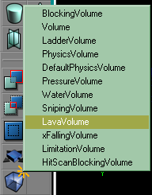

Add A Volume
This is a Basic Procedure tutorial page. It explains how to perform a single procedure which is required in many different contexts.
Overview
Volumes are a new concept in the UT2003 Unreal Engine. They are a region of space in which certain behaviour is defined. In a sense they take over from:
- zoning for gravity, water, etc
- Invisible collision hull for collision
Instructions
Make a brush shape
Volumes can be any shape (concave bad though? someone confirm?), so UnrealEd uses the red builder brush to define a shape, in exactly the same way as when you make a brush.
Choose a brush builder button from the brushbuilders section of the toolbox:
- click the button to get the default settings
- right-click to call up a parameter window.
Most volumes will be made with the cube builder, so for this:
- right-click the cube builder button
- enter the height, width and breadth you want
- click "Build"
Add the volume

Right-click the button |
Right-click on the Add Volume button in the left toolbox area and select type of volume you want. These are:
- BlockingVolume – Used for limiting player movements, works like the Invisible Collision Hull in UT
- Volume – Generic volume with no properties, you can use these for Location Tags in outdoor areas where zoning may not be possible.
- LadderVolume
- PhysicsVolume – Created with default physics, gravity and other properties can be changed in this volume to create reverse gravity, wind, etc
- DefaultPhysicsVolume – This cannot be used by mappers. The class holds the physics properties used in areas that are not contained within any PhysicsVolume.
- PressureVolume?
- WaterVolume – The player "swims" in this volume, complete with blue fogged view and distorted audio
- SnipingVolume
- LavaVolume? – Damages the actor that falls in here, with the Lava damage type "Player crashed and burned"
- xFallingVolume – Damages the actor that falls in here with Falling damage type "Player left a small crater"
- LimitationVolume
- HitScanBlockingVolume?
A white cube will now appear in your level: this is the Volume actor. You can move it as you would a brush.
If you're working with water or lava, you'll need to add a sheet or a FluidSurfaceInfo if you want the water to have a visible surface. Volumes just contains the physics, nothing more.